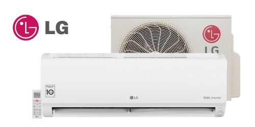

Condicionado Split LG AI Smart Inverter Voice 9000 BTUs Frio 220V
Transforme o ambiente da sua casa com o Ar Condicionado Split LG AI Smart Inverter Voice 9000 BTUs Frio 220V. Com design moderno e tecnologia avançada, oferece conforto e eficiência em qualquer espaço. Equipado com Inteligência Artificial, ajusta-se automaticamente às suas necessidades. Possui Wi-Fi integrado para controle remoto e comando de voz com Google Assistente e Alexa, trazendo praticidade para o dia a dia. Seu ciclo de refrigeração é ideal para manter o ambiente fresco, enquanto o baixo consumo de energia e a função de desumidificação garantem um ambiente saudável. A função Energy Control permite ajustar a potência e, com o modo ET e Sleep, você tem mais conveniência e conforto. Inovação e qualidade para sua casa!
Marca: LG; Modelo Evaporadora: S3NQ09AA31A.EB2GAM1; Modelo Condensadora: S3UQ09AA31A.EB2GAM1; Tecnologia: Inverter; Cor: Branco; Ciclo: Frio; Voltagem: 220V; Capacidade: 9000 BTUs; Potência refrigeração Nominal/Máx: 805W/ 1.230W; AI – Inteligência Artificial: Sim; Wi-Fi integrado pronto para uso: Sim; Modo SLEEP: Até 7 horas; Timer: Sim; Classificação Energética: B; Desumidificação [l/h]: 0,8; Fases: Monofásico; Gás Refrigerante: R-32; Dimensões da Unidade Interna: 83,7 L x 30,8 A x 18,9 P cm; Dimensões da Unidade Interna com Embalagem: 90,9 L x 38,3 A x 25,6 P cm; Dimensões da Unidade Externa: 71,7 L x 49,5 A x 23 P cm; Dimensões da Unidade Externa com Embalagem: 82,2 L x 51,6 A x 30,7 P cm; Peso Líquido Unidade Interna: 7,1 Kg; Peso Líquido Unidade Externa: 26,1 Kg; Peso Bruto Unidade Interna: 9 Kg; Peso Bruto Unidade Externa: 27,8 Kg.